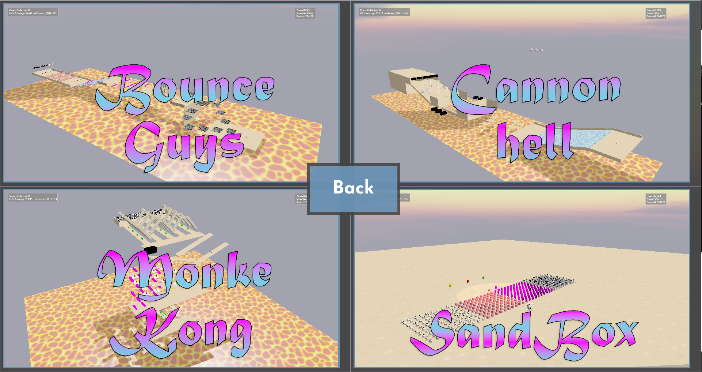

The assignment for the year 4 team project was to work more on our existing projects from the advanced game technology module. To begin with,
we picked one of the group's projects as a baseline to work on, added middleware, divided up the team into different roles, and worked remotely on making
a networked multiplayer game with different levels. For this project, I took on the role of level design, and programmed various obstacles using
tools the team had created. I also took an active role in the testing process, and all of the balancing that took place where working remotely had
left discrepancies in how some parts of levels worked.
Demonstration of my first level "Cannon Hell"
Demonstration of my second level "Monke Kong"
Why I chose my role
I asked to be in charge of level design because I hadn't really had a chance to do it before, and understood there wasn't much call
for it in any of the other assignments on my other modules. It was also a good opportunity for me to further my communication skills, as I would need to
ask for features to be implemented when I didn't have time, or the tools didn't exist in a way that would let me implement what I had planned. The role itself
wasn't entirely design, the game itself was more of a tech demo, but it was a fun change of pace designing levels, and finding interesting ways to implement what
was available, was a good challenge.
How I made the levels
I initially planned out my levels in paint, drawing rough dimensions of possible obstacles and how they’d fit into the course, and small explanations
of what each one was doing, with the reasoning I had for putting them there. Expecting the team to change a lot more than they did, I then began placing
the essentials, such as the walls and basic physics objects, then began programming the custom objects which needed to work in a specific way. Examples of
this included boulders which needed to disappear after a certain amount of time to avoid cluttering the course, and objects which needed to be constantly
rotating. Many of these were used extensively throughout both levels I created, and the level I wasn’t in charge of.
Demonstration of boulders despawning and some of the spinning obstacles
While some of them were modified for the final project,
and some elements of the levels proved too difficult, or didn’t necessarily work with our camera system or controls, I was present throughout the
entire process. This meant I was able to constantly modify them to keep up with the ongoing changes in the engine, and explain specific aspects as necessary.
Observations
This was my first time working remotely on a team project, and while I wasn’t sure exactly what to expect, the team had a great level of
communication, and were extremely easy to work with. I also just had a good time doing it. From a creative aspect, working on the levels was
a great way to explore ideas I had, and from a programming aspect, being able to easily put together complex objects using existing work the
team had made as part of the engine was very satisfying.
How successful has it been?
Overall, the group received a mark of 66. While not what I’d hoped for, the commentary on the levels was broadly positive, stating that they worked
well, although could have benefitted from a data-driven approach. I personally feel that I could have showed more of the team’s work off, however, I do
think that what was there was well put together, and was overall a good showcase of the various different elements we had created. Especially in being sure to
design the levels from the ground up to work for multiplayer.
The menu shows the levels zoomed out
What would I do differently if I started over?
Based on the feedback we received, I think I'd have spent more time making any reused objects into components, then pushing for more time to be
spent making sure these were working well, and then perhaps splitting up some of the level implementation based on the designs I created. By taking advantage
of inheritance, a lot of the components would have been a lot easier to implement.
How I've been able to use it
This project provided a great deal of insight on how to develop within a team. I already had some limited experience from the second year team project developing
a mobile app, but this was far less complicated, and we had much less independence. Additionally, the feedback about using a more data driven approach carried over
into my year 4 dissertation and Shuttle Engine, where I been worked on making sure that the engine and
the levels which run on top are functionally separate entities. Finally it was very useful to learn about remote collaboration, and made it less daunting when I
started work at Naturalmotion